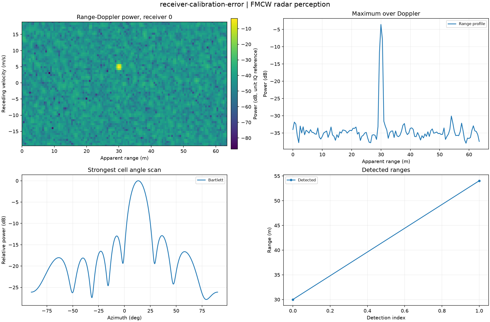

Reproducible FMCW radar perception. Units and field components are printed on the scientific axes. peak d-q quantities use exp(+i omega t); terminal currents point into the protected line.
Sealed numeric archive | Summary CSV | Physical parameters | Run request | Source and environment

| clipped_fraction | 0.0 |
|---|---|
| detections | 2 |
| false_detections | 1 |
| matched_targets | 1 |
| missed_targets | 0 |
These are simulations, not hardware measurements. Network-model, measurement, timing and statistical uncertainty require distinct convergence checks. Singular or unilluminated data use explicit masks.
Source revision: af791fbe32a93bb2174ccbd885b148ddbea28e4d.
Dirty checkout: False.
Configuration SHA-256: e01a4e96512378ea9ae3d28bef4283379a359bcf15ceb23c7cd82ba1934d6b5a.
Replay preserves original source and parameter provenance. SHA-256 manifests detect changed bytes; they are unsigned integrity records, not certificates of physical validity.